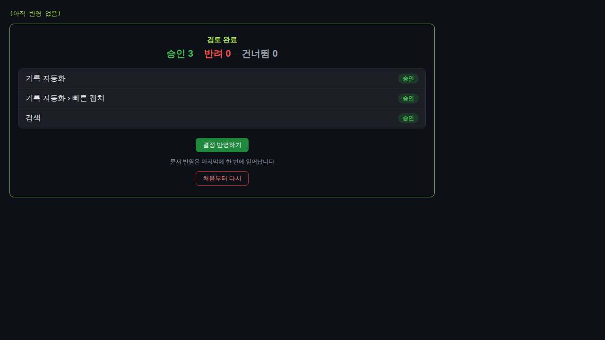
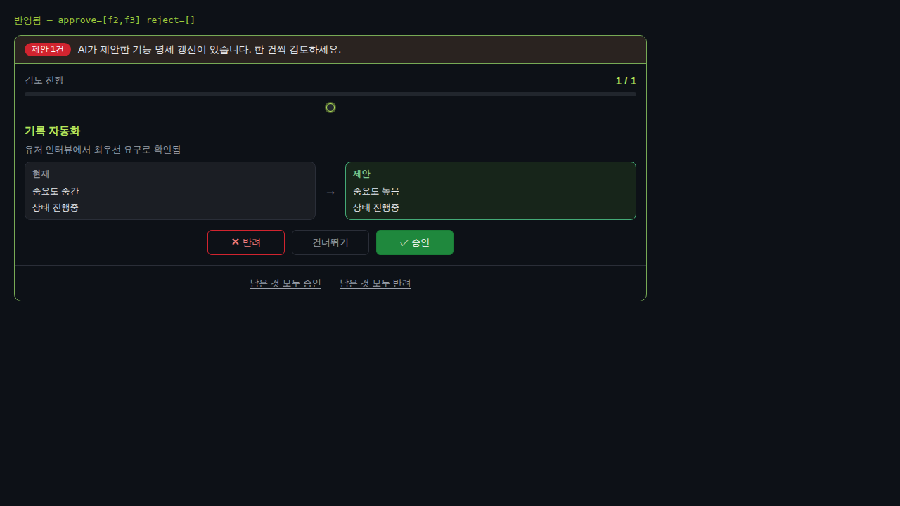
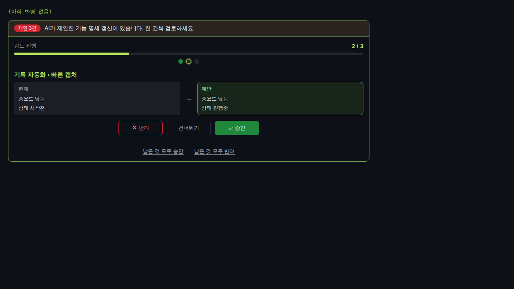
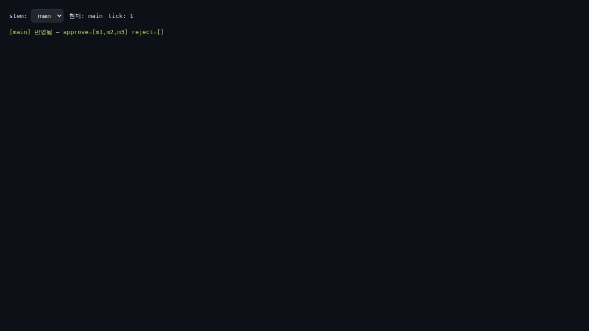
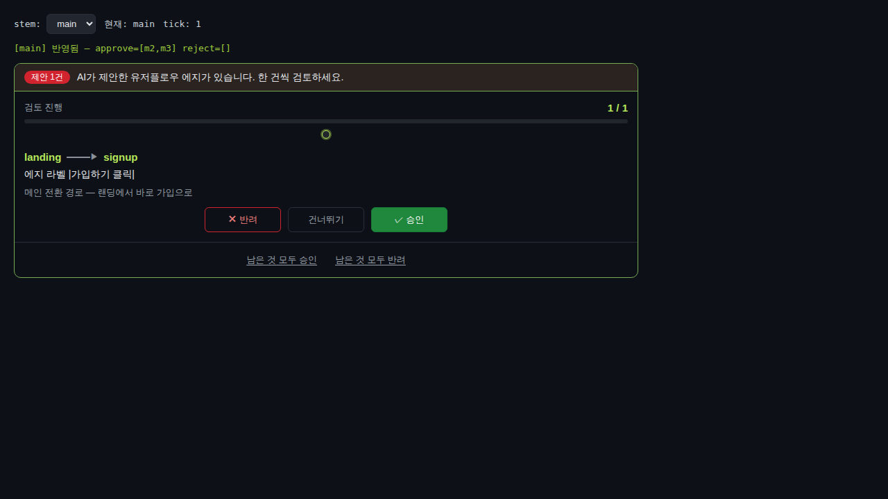
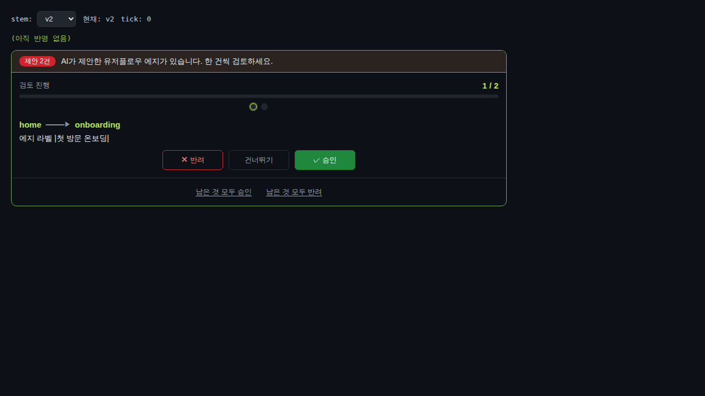

| features 승인 UI는 위저드 방식이다 (planning-features-approval-apply) | 진입 즉시 한 건씩 + 요약 1회 반영 (happy) | web | 격리 픽스처 features-fixture 실픽셀 구동(playwright 실클릭) — 1/3부터 1건씩 카드, 승인×3 → 요약 → wizard-apply 1회 → applyInChunks 경로 | web 탐지: vite 앱(web/package.json build=tsc+vite) + web/verify-fixture 존재 | ✓ PASS |  |
| features 승인 UI는 위저드 방식이다 (planning-features-approval-apply) | 건너뛰기는 큐에 남고 반영 후 다시 나타난다 (edge) | web | 격리 픽스처: f1 건너뛰기 → f2·f3 승인 → 반영 → 큐 재조회로 f1 카드 재등장 | web 탐지 동일 + shared wizard-state 단위테스트(skip은 applyPayload 미포함) | ✓ PASS |  |
| features 승인 UI는 위저드 방식이다 (planning-features-approval-apply) | 이탈 후 재진입 복원 + 반영 실패 결정 보존 (error path) | web | 재진입 복원=features-fixture(f1 승인 후 localStorage 유지 reload → 2/3 재개, 체크포인트 features-wizard:fixture-project 잔존); 반영 실패 보존=공용 셸 실패 픽스처(PRD-fail, appliedTick 0 고정 → 결정·요약 잔존, 재시도 가능) | web 탐지 동일 + shared wizard-state 단위테스트(stale id 폐기·복원) | ✓ PASS |  |
| 유저플로우 탭의 승인 UI는 위저드 방식이다 (planning-userflow-approval-edit) | 큐가 있으면 위저드가 뜨고 반영 후 그래프가 갱신된다 (happy) | web | 격리 픽스처 userflow-fixture(stem=main, m1·m2·m3): 위저드 1/3 표시 → 승인×3 → applyUserFlow(applyInChunks) 1회 → tick++·큐 비움 | web 탐지 동일; 그래프 재조회는 App.tsx applyUserFlow 성공경로(fetchDocsPlanningUserFlow+fetchUserFlowSuggestions Promise.all, 정적확인) | ✓ PASS |  |
| 유저플로우 탭의 승인 UI는 위저드 방식이다 (planning-userflow-approval-edit) | 빈 큐면 위저드가 렌더되지 않는다 (edge) | web | main 큐 비운 뒤: 셸 return null → 위저드 루트/배너/진행바 부재, stem-switch·log 크롬만 유지 | web 탐지 동일 + 셸 ApprovalWizard.tsx:111 suggestions.length===0 → return null(정적확인) | ✓ PASS |  |
| 유저플로우 탭의 승인 UI는 위저드 방식이다 (planning-userflow-approval-edit) | 건너뛰기는 큐에 남고 반영 후 다시 나타난다 (edge) | web | 격리 픽스처: stem=main에서 m1 건너뛰기 → m2·m3 승인 → 반영 → m1 카드 재등장 | web 탐지 동일 + shared wizard-state 단위테스트(skip 미포함) | ✓ PASS |  |
| 유저플로우 탭의 승인 UI는 위저드 방식이다 (planning-userflow-approval-edit) | stem 전환은 결정을 침범하지 않는다 (edge — cross-stem 격리) | web | 격리 픽스처: main에서 m1 승인(미반영) → v2 전환(cur-tick 0 리셋·v1 신선 1/2·m1 누수 없음) → main 복귀 시 2/3 복원; 체크포인트 키 uflow-wizard:project:main 과 :v2 분리 | web 탐지 동일 + App.tsx key=project:stem 리마운트·switchPlanningFlow tick 0 리셋(정적확인) | ✓ PASS |  |
{kind=link}
{kind=link}
{kind=link}
{kind=link}
{kind=link}
{kind=link}